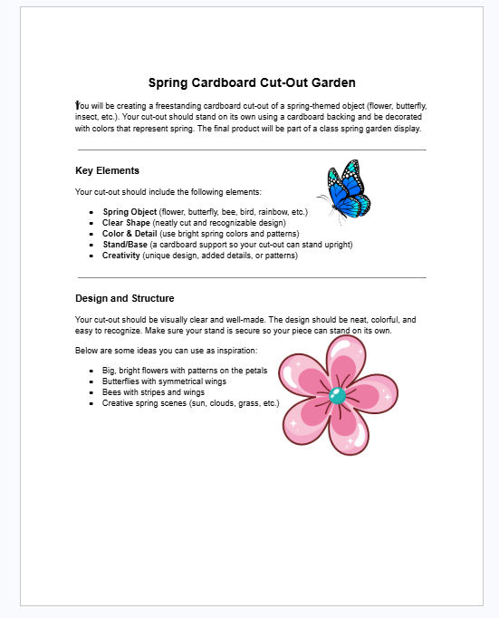
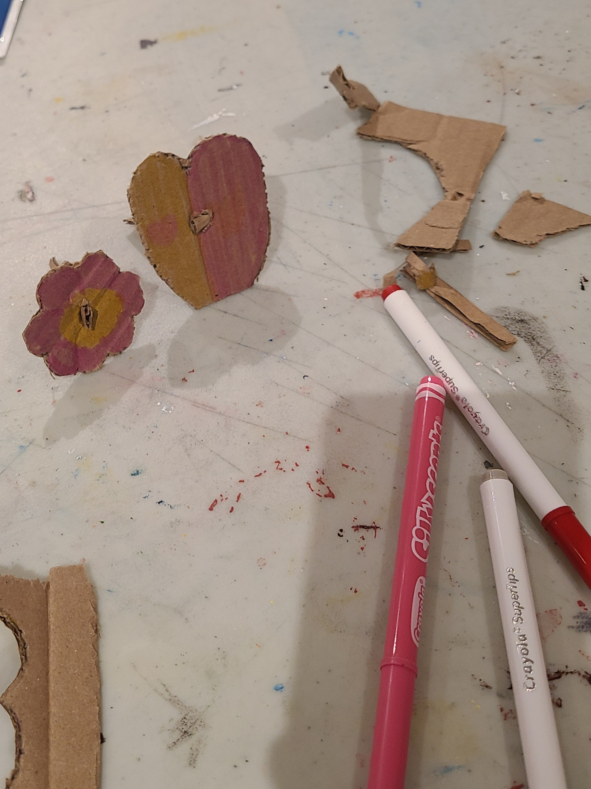
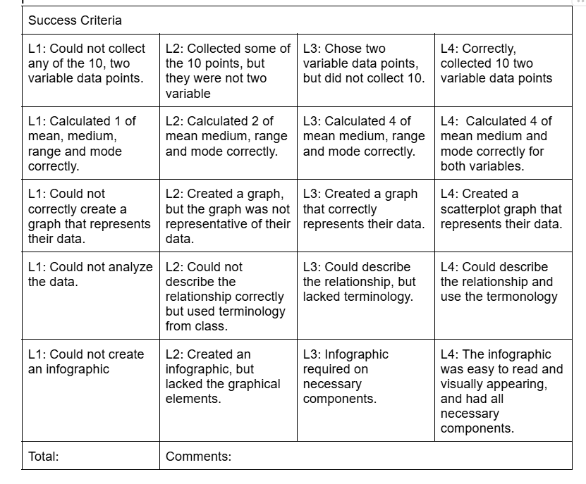
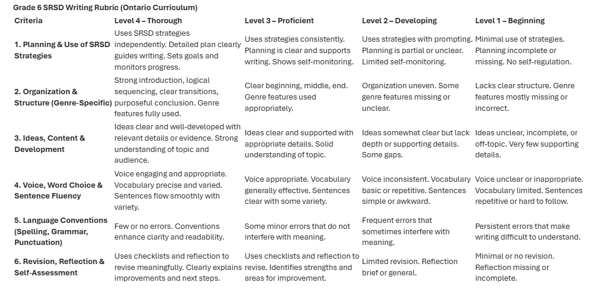

🌸 Spring Cardboard Cut-Out Garden – Creative Expression
These artifacts showcase student work from a hands-on spring art activity. Students created freestanding cardboard cut-outs of spring-themed objects. The first item is the instruction sheet given to students, outlining expectations. The second will be an example of student-created work.
① the thingProject instructions – Spring cut-out garden
This is the handout provided to students, detailing the expectations for creating a spring-themed cardboard cut-out. Students were asked to design, decorate, and construct a freestanding piece to contribute to a collaborative classroom display.

① the thingStudent cut-out example (to be added)
This will show a student’s completed spring cut-out, demonstrating creativity, use of color, and ability to construct a freestanding design.

📊 Data Management Rubric & Self-Reflection Tool
These artifacts demonstrate two complementary assessment approaches. The data management rubric is used for formal evaluation of student work, focusing on data collection, statistical analysis, graphing, and communication. The second rubric supports student self-reflection, helping learners assess their own progress and set goals. Together, these tools highlight my use of both assessment of learning and assessment as learning in the classroom.
Assessment rubrics – data management & self-reflection
This includes a teacher-facing data management rubric used for formal evaluation, alongside a student self-reflection rubric. The first supports consistent and structured grading, while the second encourages students to reflect on their learning and identify areas for growth.


⬇️ each entry follows: thing · artifact · impact — organised by reflection type.